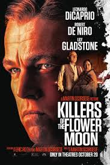

The story of American scientist, J.Robert Oppenheimer, and his role in the development of the atomic bomb.

Nora and Hae Sung, two deeply connected childhood friends, are wrested apart after Nora's family emigrates from South Korea. Twenty years later, they are reunited for one fateful week as they confront notions of love and destiny.
The incredible tale about the fantastical evolution of Bella Baxter; a young woman brought back to life by the brilliant and unorthodox scientist, Dr. Godwin Baxter.
When oil is discovered in 1920s Oklahoma under Osage Nation land, the Osage people are murdered one by one - until the FBI steps in to unravel the mystery.
A woman is suspected of her husband's murder, and their blind son faces a moral dilemma as the main witness.

Miles Morales catapults across the multiverse, where he encounters a team of Spider-People charged with protecting its very existence. When the heroes clash on how to handle a new threat, Miles must redefine what it means to be a hero.

A cranky history teacher at a remote prep school is forced to remain on campus over the holidays with a troubled student who has no place to go.

The story of Eugenie, an esteemed cook, and Dodin, the fine gourmet with whom she has been working for over the last 20 years.

This love story chronicles the lifelong relationship of conductor-composer Leonard Bernstein and actress Felicia Montealegre Cohn Bernstein.

In modern-day Helsinki, two lonely souls in search of love meet by chance in a karaoke bar. However, their path to happiness is beset by obstacles - from lost phone numbers to mistaken addresses, alcoholism, and a charming stray dog.